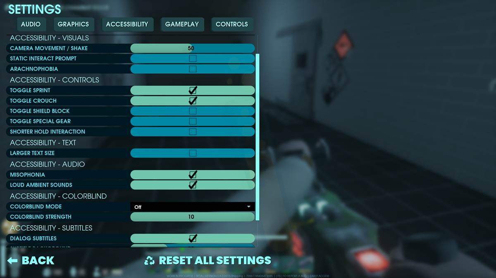

Dev/Player Relations
One of the relatively typical, but very appreciated aspects of Abiotic Factor is its communication with the community. There are a few notable examples of game developers having extensive connections with their community. Games like No Man's Sky, Stardew Valley, Baldur's Gate 3, and Hades are just a few modern games that pride themselves on fantastic developer relations. However, I feel that Abiotic Factor's developer team does a fantastic job at keeping the community engaged with their game through a few standout methods.
Developer Vlogs
The first and most notable would be their developer vlogs, which they often provide with every major update to the game. While many developers could simply deliver an informative video discussing what was added with a new update, the team at Deep Field goes the extra mile by adding a bit of personality in their videos. The vlogs are equal parts informative and humorous, and really highlight the personalities of the community manager, CrissCrossGal, and, in later vlogs, the lead designer, Zag. Their personalities are just the right contrast to one another, and really promote a stronger sense of community between the fans and the team as a whole.
Another way the developers cater to their community is by offering a wide range of accessibility options. In contrast with the previous statements, there are numerous examples of games that don't offer much in terms of accessibility. Many developers contend that adding accessibility features to their games would be costly, yet data argue that this would benefit many gamers. In an Evolve-PR article, Kate Hall cites Steven Spohn of AbleGamers, "...there are as many as 46 million potential players with disabilities in America alone." (https://www.evolve-pr.com/2020/03/18/lets-talk-about-accessibility-in-gaming-part-1/) Not to mention that able-bodied gamers can still benefit from some accessibility features, such as subtitles or specific sound control.
The accessibility features are surprisingly robust for a modern game, with options for larger text, subtitles, and colorblind modes, to more uncommon features such as an arachnophobia mode, which adjusts spider-like models, and controls for misophonia, which is the irritation from common sounds like eating, drinking, or yawning. Providing these options opens the game up to many more players and truly highlights how accommodating the developers are to their community.